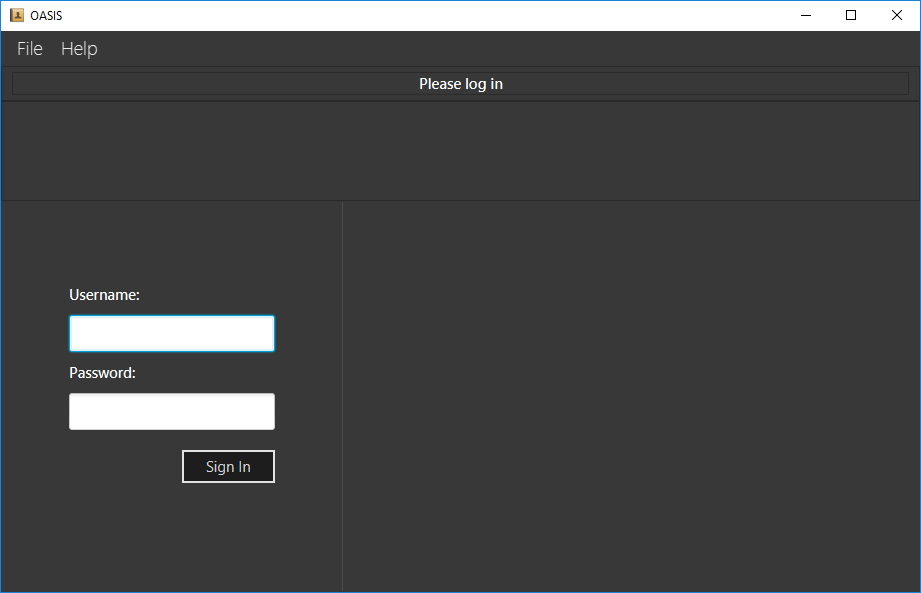

By: Nus School of Computing AY1819S1 F10-1 Team Since: Aug 2018 Licence: MIT
- 1. Introduction
- 2. Quick Start
- 3. Commands
- 3.1. Viewing help :
help - 3.2. View history :
history - 3.3. Adding an employee:
add - 3.4. Listing all persons :
list - 3.5. View all the permissions that an employee has :
viewpermission - 3.6. Removing an employee from my department:
delete - 3.7. Sort employee display list :
sort - 3.8. List details of employee :
select - 3.9. Apply for leave :
leaveapply - 3.10. Search employees by name :
find - 3.11. Filter employees by criteria :
filter - 3.12. Edit details :
edit - 3.13. Modify permissions of an emplyee :
modifypermission - 3.14. Change password :
passwd - 3.15. View deleted employee archive :
archive - 3.16. Undoing previous command :
undo - 3.17. Redoing the previously undone command :
redo - 3.18. Clearing all entries :
clear - 3.19. Logout from the system:
logout - 3.20. Exiting the program :
exit
- 3.1. Viewing help :
- 4. Future Commands (Currently not implemented yet)
- 5. FAQ
- 6. Command Summary
1. Introduction
Office Assistance Specialized Integration System (OASIS) is for users who prefer to use a desktop app for managing employees, while allowing employees to handle some automatic features themselves. More importantly, OASIS is optimized for those who prefer to work with a Command Line Interface (CLI) while still having the benefits of a Graphical User Interface (GUI). If you can type fast, OASIS can get your employee management tasks done faster than traditional GUI apps. Interested? Jump to the Section 2, “Quickstart” to get started. Enjoy!
2. Quick Start
-
Ensure you have Java version 9 or later installed in your Computer.
-
Download the latest oasis.jar.
-
Copy the file to the folder you want to use as the home folder for your Address Book.
-
Double-click the file to start the app. The Graphical User Interface (GUI) should appear in a few seconds.
 -
To login, enter in the username
Adminand the passwordPa55w0rd. Both values are case sensitive. These values are the default username and password combinations for the admin account, and are always available. -
After you have logged in, type a command in the command box and press Enter to execute it.
e.g. typing help and pressing Enter will open the help window. -
Some example commands you can try:
-
list: lists all employees. -
add-n John Doe -p 98765432 -e johnd@example.com -a 311, Clementi Ave 2, #02-25 -s 10000: adds an employee named John Doe with the email johnd@example.com, the address 311, Clementi Ave 2, #02-25, with a salary of 10,000. -
findJ*: finds all employees that start with J. -
exit: exits the app
-
-
Refer to Section 3, “Commands” for details of each command.
3. Commands
Command Format
-
Words in
UPPER_CASEare the parameters to be supplied by the user e.g. inadd -n NAME,NAME,SECTORis a parameter which can be used as `add -n John -s Sales `. -
Items in square brackets are optional e.g
-n NAME [-t TAG]can be used as-n John Doe -t friendor as-n John Doe. -
Items with
… after them can be used multiple times including zero times e.g.-t TAG…can be used as-t friend,-t friend -t familyetc. -
Parameters can be in any order e.g. if the command specifies
-n NAME -p PHONE_NUMBER,-p PHONE_NUMBER -n NAMEis also acceptable.
3.2. View history : history
Prints all commands entered before as a history of commands.
Format: history
|
Pressing the ↑ and ↓ arrows will display the previous and next input respectively in the command box. |
3.3. Adding an employee: add
Adds an employee into the system.
Format: add -n NAME -e EMAIL -n NUMBER -s SALARY -a ADDRESS [-t PROJECT]
Examples:
-
add -n Joshua -s 15000 -e josh@gmail.com -n 81234567 -a 81 Joshua’s Road Singapore 123456 -
add -n Raynard -e rnardha@gmail.com -n 91235678 -s 1000 -a somewhere on earth
3.4. Listing all persons : list
Shows a list of all employees in the system.
Format: list
3.5. View all the permissions that an employee has : viewpermission
Displays all the permissions that an employee has been assigned.
Format: viewpermission INDEX
Examples:
-
viewpermission 2
3.6. Removing an employee from my department: delete
Removes an employee from the system.
Format: delete INDEX
Examples:
-
delete 3
3.7. Sort employee display list : sort
Lists all employees, using a given criteria.
Format: sort -CRITERIA
There are many different criteria like name, department, etc.
-
To sort by name, replace CRITERIA with n
-
To sort by department, replace CRITERIA with d
Examples:
-
sort -d -
sort -n
3.8. List details of employee : select
Lists the detailed information of an employee. This is the same result as if the person is clicked in the GUI.
Format: select INDEX
Examples:
-
select 3
3.9. Apply for leave : leaveapply
Apply for leave on specific dates.
Format: leave add -de DESCRIPTION -da DATE [-da DATE]
Examples:
-
`leaveapply -de Family holiday -da 2018-10-18 2018-10-19 `
3.10. Search employees by name : find
Search and display all employees that match the given name criteria.
Format: find NAME
Examples:
-
find jian yu -
find doe
3.11. Filter employees by criteria : filter
Displays employees with details that match certain criteria specified.
Format: filter -CRITERIA FILTER_CRITERIA [-CRITERIA FILTER_CRITERIA]
Examples:
-
filter -n Tan -
filter -n Albert -d Marketing
3.12. Edit details : edit
Changes the users details (such as contact information).
Format: edit INDEX [-n NAME] [-p PHONE] [-e EMAIL] [-a ADDRESS] [-s SALARY] [-t PROJECT]
-
Edits the person at the specified INDEX. The index refers to the index number shown in the displayed person list. The index must be a positive integer 1, 2, 3, …
-
At least one of the optional fields must be provided.
-
Existing values will be updated to the input values.
Examples:
-
edit 1 -p 91234567 -e johndoe@example.com -
edit 2 -n James
3.13. Modify permissions of an emplyee : modifypermission
Modifies the permissions of an employee.
Format : modifypermission INDEX [-a PERMISSION_TO_ADD]… [-r PERMISSION_TO_REMOVE]…
-
Modifies the permission of the person at the specified INDEX. The index refers to the index number shown in the displayed person list. The index must be a positive integer 1, 2, 3, …
Examples:
-
modifypermission 1 -a ADD_EMPLOYEE
-
modifypermission 2 -a REMOVE_EMPLOYEE -r ADD_EMPLOYEE
3.14. Change password : passwd
Changes user password.
Format: passwd
| Passwords should not to be supplied in the command line (makes it vulnerable to viewing it through history.) |
3.15. View deleted employee archive : archive
Displays the list of employees removed from the system. To delete an employee from the archive simply remove again.
Format: archive
3.16. Undoing previous command : undo
Restores the address book to the state before the previous undoable command was executed.
Format: undo
|
Undoable commands: those commands that modify the address book’s content ( |
Examples:
-
delete 1
list
undo(reverses thedelete 1command) -
select 1
list
undo
Theundocommand fails as there are no undoable commands executed previously. -
delete 1
clear
undo(reverses theclearcommand)
undo(reverses thedelete 1command)
3.17. Redoing the previously undone command : redo
Reverses the most recent undo command.
Format: redo
Examples:
-
delete 1
undo(reverses thedelete 1command)
redo(reapplies thedelete 1command) -
delete 1
redo
Theredocommand fails as there are noundocommands executed previously. -
delete 1
clear
undo(reverses theclearcommand)
undo(reverses thedelete 1command)
redo(reapplies thedelete 1command)
redo(reapplies theclearcommand)
3.19. Logout from the system: logout
Logouts from the system, returning to the login screen. Once this command is ran, the history log of the commands and undo or redo history will be cleared.
Format: logout
3.20. Exiting the program : exit
Exits the program, automatically saving data and logging you out.
Format: exit
4. Future Commands (Currently not implemented yet)
4.1. List effectiveness of sector by profit : sector
Lists all the sectors, sorted by more profitable sector first.
Format: sector
4.2. View leave summary : leavesummary
Views the summary of off days current employees take for the month.
Format: leavesummary
5. FAQ
Q: What if I lose my password?
A: Please contact an IT admin to help reset your password.
Q: Is it possible for me to change my username?
A: No, the username assigned to you is fixed.
6. Command Summary
6.1. Commands that do not require permissions
| Command | Format | Example |
|---|---|---|
Help |
help |
help |
History |
history |
history |
list all employee |
list |
list |
Sort employee display list |
sort -CRITERIA |
sort -d |
Select an employee |
select INDEX |
select 1 |
Search employees by name |
find NAME |
find Joshua |
Filter employees by criteria |
filter -CRITERIA FILTER_CRITERIA [-CRITERIA FILTER_CRITERIA] |
filter -n Jeremy Choo -d Development |
Change password |
passwd |
passwd |
View archived employees |
archive |
archive |
Undo commands |
undo |
undo |
Redo commands |
Redo |
Redo |
Logout from the system |
logout |
logout |
Exit |
exit |
exit |
6.2. Commands that require permission
| Command | Required Permission | Format | Example |
|---|---|---|---|
Add employee |
ADD_EMPLOYEE |
add -n NAME -e EMAIL -n NUMBER -s SALARY [-t PROJECT] |
add -n Joshua -s 15000 -e josh@gmail.com -n 81234567 -a 81 Joshua’s Road Singapore 123456 |
Delete employee |
REMOVE_EMPLOYEE |
delete INDEX |
delete 1 |
Edit employee |
EDIT_EMPLOYEE |
edit INDEX [-n NAME] [-p PHONE] [-e EMAIL] [-a ADDRESS] [-s SALARY] [-t PROJECT] |
edit 1 -p 91234567 -e johndoe@example.com |
Clear |
Admin |
clear |
clear |
Modify Permission |
ASSIGN_PERMISSION |
modifypermission INDEX [-a PERMISSION_TO_ADD]… [-r PERMISSION_TO_REMOVE]… |
modifypermission 2 -a REMOVE_EMPLOYEE -r ADD_EMPLOYEE |
View all Permissions of employee |
ASSIGN_PERMISSION |
viewpermission INDEX |
viewpermission 1 |